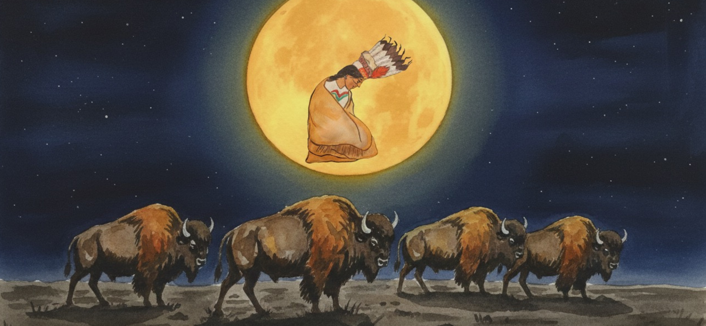

Sikóóhkotok Lethbridge
The city of Lethbridge is located on traditional Blackfoot territory, in an area known by the Blackfoot as Sikóóhkotoki, meaning “black rock.” Blackfoot presence in this land goes back millennia, where stories, ceremony, and knowledge were passed from generation to generation.
With the arrival of settlers, the signing of Treaty 7, and the establishment of residential schools, the Blackfoot language and ways of life were deliberately suppressed. These policies caused deep and lasting harm, disrupting the intergenerational transmission of language and culture.
Despite these harmful policies Blackfoot culture and language still remains today, carried by teachers, elders, and learners across the confederacy. The Atsimaani Conference is part of an ongoing effort to revitalize the Blackfoot Language, honouring the past while building a future for upcoming generations.
- Fort Whoop-Up (Interpretive Centre) — Regional history and interpretation, located in Indian Battle Park.
- Galt Museum & Archives — Regional museum with exhibits and resources on Niitsitapi history and the area.
- Ak’hstimani (Galt Medicine Wheel) — Niitsitapi Landscapes — Learn about the medicine wheel through Blackfoot place-based knowledge.
- Indian Battle Park — River valley park and an important historic landscape in the city.
- Helen Schuler Nature Centre & Lethbridge Nature Reserve — Coulee trails and interpretation in the river valley (great for land-based learning).
- “Native Flora” Public Art (Helen Schuler Nature Centre) — Mural featuring local plants labeled in Blackfoot, English, and Latin.
